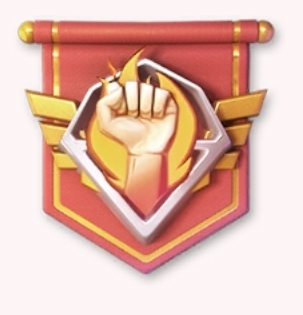

⚔️ تحليل تجهيزات أبطال الهجوم
Offensive Heroes Gear Analysis — تحليل ثنائي اللغة

Offensive Heroes Gear Analysis — تحليل ثنائي اللغة
يركز أغلب اللاعبين على تطوير السلاح والرقاقة لأبطال الهجوم مثل كيمبرلي وستيتمان، لكن يتم في المقابل إهمال الدرع والرادار.
يعتقد البعض أن وجود مورفي وويليامز في الصف الأمامي كافٍ لحماية أبطال الصف الخلفي، لكن هذا غير صحيح بشكل كامل.
فمورفي وويليامز يستطيعان امتصاص الهجمات المباشرة، لكنهما لا يستطيعان منع المهارات التي تتجاوز الصف الأمامي أو تصيب عدة أهداف في وقت واحد، لذلك تصل هذه الهجمات إلى أبطال الصف الخلفي.
لهذا السبب، إذا كان مستوى الدرع والرادار منخفضًا لدى كيمبرلي أو ستيتمان، فقد يتم القضاء عليهما بسرعة قبل أن يتمكنا من استخدام كامل قوتهما الهجومية، مهما كانت قوة أسلحتهما.
لذلك، بعد تطوير تجهيزات الهجوم، يُنصح بالعمل تدريجيًا على رفع الدرع والرادار أيضًا، حتى يتمكن أبطال الهجوم من الصمود لفترة أطول وإطلاق مهاراتهم أكثر من مرة أثناء القتال.
عند تطوير تجهيزات الأبطال، لا يُنصح بالتركيز على بطل واحد فقط وإهمال بقية الفريق. حتى لو كان لديك بطل هجومي قوي، فإن استثمار جميع الموارد فيه وحده قد يترك بقية الفريق ضعيفًا، مما يؤثر سلبًا على أداء التشكيلة بالكامل.
لذلك، يُفضل تطوير تجهيزات الأبطال بشكل متوازن، بحيث يتم توزيع الموارد تدريجيًا بين الأبطال الأساسيين، خاصة أبطال الصف الخلفي، لضمان بقاء جميع عناصر الفريق في القتال لأطول فترة ممكنة.
Most players focus on upgrading the Weapon and Chip of offensive heroes like Kimberly and Stetmann, while often neglecting their Armor and Radar.
Many players believe that having Murphy and Williams on the front line is enough to protect the backline. However, this is not entirely true.
Murphy and Williams are excellent at absorbing direct attacks, but they cannot block area-of-effect (AoE) abilities or skills that bypass the front line and hit multiple targets. As a result, your backline heroes can still take heavy damage.
If Kimberly or Stetmann have low Armor and Radar levels, they may die before dealing their full damage, no matter how strong their Weapon and Chip are.
For this reason, once your offensive gear is well developed, it is recommended to gradually upgrade the Armor and Radar of your damage dealers as well. Keeping them alive a few seconds longer can allow them to cast additional skills and significantly increase your team's overall damage output.
When upgrading hero gear, it is generally not recommended to focus all your resources on a single hero while neglecting the rest of the team. Even if one offensive hero is your main damage dealer, over-investing in that hero alone can leave the rest of your formation too fragile, reducing your team's overall effectiveness.
Instead, try to upgrade your core heroes in a balanced way, gradually improving their equipment to ensure that your entire team survives longer and performs consistently during battle.